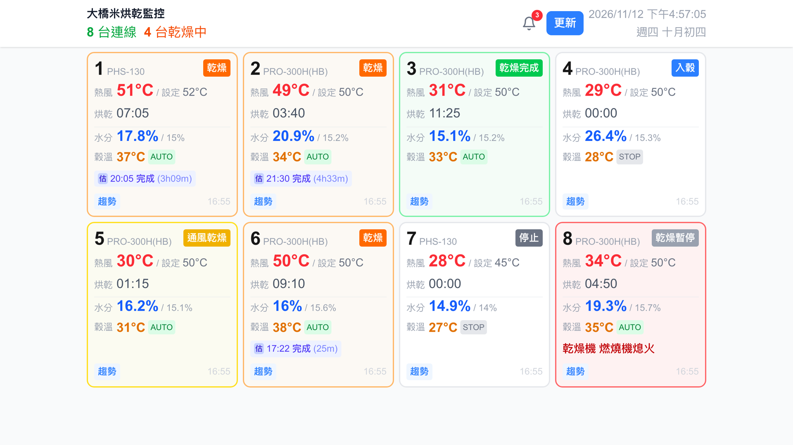

服務介紹 ・ 致 三久
稻穀烘乾機遠端監控系統
把三久乾燥機與 CS-R 水分計的 Modbus 資料接上雲端，讓米廠的人用手機、平板、電腦看全場烘乾狀況，烘完或異常時由 LINE 主動通知。
導入場域 大橋米／壽米屋開發維運 牛奶股份有限公司文件日期 2026-11-12
8 台乾燥機＋水分計同時監看
5 分鐘自動輪詢一次全場
3 種LINE 通知：完成、達標、異常
0 台現場需加裝的電腦或主機
現場只多一台串口轉網路的轉換器。資料讀取、儲存、推估與通知都在雲端執行，使用者不需要安裝 App，打開網址就能用，也能加到手機主畫面。
系統架構
從機台基板到手機，資料只走一條路
設備端（米廠現場）
三久乾燥機 通訊基板Slave ID 01H ・ 機台狀態、熱風溫度、定時、異常碼
CS-R 水分計 通訊基板Slave ID 02H ・ 水分值、設定值、穀溫、穀物種類
RS-485 串接 ・ Modbus RTU
9600, 8-N-2
Moxa NPort 5150A串口轉乙太網路，TCP Server 模式
廠內路由器固定 IP，對外開放單一連接埠
→
雲端
常駐輪詢服務每 5 分鐘連線到現場，送出 Modbus RTU 讀取指令、驗證 CRC、失敗自動重試
解析暫存器 → 寫入
雲端資料庫即時狀態、歷史讀值、烘乾批次、通知紀錄
烘乾推估用最近的水分下降速率推算預計完成時間
通知判斷烘乾完成、水分達標、設備異常
→
使用端
手機管理端列表式看板、趨勢圖、歷史批次
電腦／平板端方塊格看板，適合辦公室螢幕或現場平板常駐
LINE 官方帳號主動推播，附「查看監控面板」按鈕
畫面資料即時推送
不需手動重新整理
設備端
接在三久原廠通訊基板上，不改機台
我們使用三久提供的 Modbus 規格（大橋米 MODBUS R2）。兩塊通訊基板串在同一條 RS-485 上，由一台 NPort 5150A 轉成網路。系統目前只用 03H 讀取，不對機台下任何寫入指令。
| 通訊參數 | 現場設定 |
|---|
| 協定 | Modbus RTU（經 NPort 透通傳輸） |
| 串口 | 9600, 8-N-2, RS-485 2-wire |
| 功能碼 | 03H 讀取 |
| 單次讀取 | 最多 12 words |
| 輪詢 | 每 5 分鐘，每筆指令最多重試 3 次 |
| 接線 | D+ → Pin 4 ・ D- → Pin 8 ・ GND → Pin 5 |
| 基板 | 位址 | 讀取內容 |
|---|
乾燥機
ID 01H | 00x0H–00x4H | 機種、運轉狀態、熱風溫度、設定溫度、定時、異常碼 |
水分計
ID 02H | 0x00H–0x0FH | 水分測定值、水分設定、穀溫、穀物種類、AUTO／STOP、異常碼、水分分布 |
| x 為機台編號（0–F）。目前辨識的機種包含 PHS-130、PRO-300H(HB) 等 11 種機種代碼。 |
現場實體架構
大橋米現場的配電箱。箱內只有三樣東西：兩塊三久通訊基板、一台 NPort、一顆電源供應器。
配電箱全景。
- 1Moxa NPort 5150A 上方接電源與網路線，下方 DB9 轉端子台接 RS-485
- 2三久通訊基板 ×2 一塊對乾燥機、一塊對水分計
- 3電源供應器 供電給兩塊基板
- 4線管 往機台的訊號線與網路線由此進出
通訊基板近照。
- 1指撥開關 SW1／SW2 設定鮑率、機台數與站號（Address）
- 2狀態燈 Dryer/SB link、PLC/PC link、COMMAND、PROG. RUN
- 3基板端子台 電源、往機台的連線、往 NPort 的 RS-485
- 4DB9 轉端子台 兩塊基板的 RS-485 併接後進 NPort
- 5NPort 5150A Ready、Link、Tx/Rx 燈號正常
電腦／平板端
一個畫面看完全場
每台機器一個方塊，用顏色分辨狀態。字體放大，站在機台旁或辦公室另一頭都看得清楚。
大橋米烘乾監控 ／ipad

乾燥通風乾燥乾燥完成入穀停止異常
趨勢圖。點任一台的「趨勢」，看 24 小時內的熱風溫度、水分、穀溫曲線。
通知中心。鈴鐺收著尚未處理的通知，處理完可逐筆或全部清除。
本文件的看板畫面是實際系統的畫面，為了呈現烘乾中的樣子，數值使用示範資料。
手機管理端
人不在廠裡，也知道烘到哪了
手機版改成列表，一台一列，單手往下滑就能看完。點「趨勢」可以查這一批烘了多久、水分降多快、預計幾點完成，也能回頭翻歷史批次。
全場列表。連線台數、乾燥中台數，以及每台的即時數值與預計完成時間。
水分趨勢與烘乾推估。已烘時間、水分變化、下降速率、預計完成時間。
歷史批次。每一批的起始水分、結束水分、目標與烘乾時數。
LINE 主動通知
下列三種情況會推播到米廠的 LINE，點按鈕直接開啟看板。
✅ 3號乾燥機烘乾完成！
烘乾時間11小時25分
最終水分15.1%
完成時間2026/11/12 16:33
查看監控面板
✅ 3號水分已達標！
目前水分15.1%
目標水分15.2%
時間2026/11/12 16:25
查看趨勢圖
🚨 設備異常警報
異常訊息8號乾燥機：燃燒機熄火
時間2026/11/12 16:50
查看監控面板
通知卡片依系統實際送出的欄位繪製，內容為示範資料。異常名稱直接對應三久規格書的異常碼，例如風壓開關異常、熱風檢知器異常、燃燒機熄火、各馬達過載。
操作影片 ・ 20 秒
收到通知、看全場、查進度
影片附中文語音旁白，與字幕的三個步驟對應。檔案：dryer-monitor-20s.mp4（1920×1080）。
想與三久討論
現場實測後的三個問題
- RS-485 訊號品質。現場實測 CRC 通過率約 50–60%，目前靠重試補足。想請教原廠對終端電阻、線材與串接長度的建議。
- 讀取上限與頻率。單次最多 12 words，8 台全場讀一輪需要多筆指令。想確認原廠建議的最短輪詢間隔。
- 寫入功能（06H）。目前只讀不寫。若未來要做遠端調整水分設定，想先了解原廠的安全限制與建議作法。